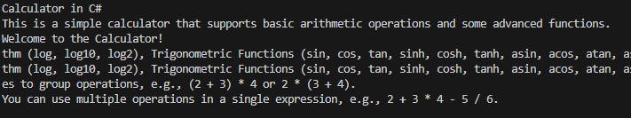
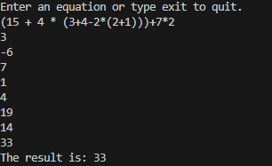

General Information
This is my Calculator in C# project. Why a calculator and why in C#? Very good questions. To answer the first question: I wanted a simple project that can be made
complex with multiple different types of features and functionalities, hence why I chose a calculator. To answer the second question: I wanted to work with a project
in C# because I have not had much experience working in this language. I know, not the most riveting answers, but it's truly why I chose this project. This project
is not very complex, but it does have some features that make it work really well. First off, the calculator can do most basic functionalities that all calculators
can do. It can add, subtract, multiply, divide, raise something to a power, and factorial. It can do all of this while keeping the proper structure (PEMDAS) of math.
I am very proud of the input parsing method I created. It can handle spaced and nonspaced inputs without any issues. If the user enters fib followed by a number
within their input, the calculator will only calculate the fibonacci sequence and forget about the rest of the input. While this may not be the best way to handle
the input, I will be updating the code to remove the fibinocci input and continue with the other input. Below are some screenshots of the project in action.
Calculator in C# Mainpage
Calculator in C# General Calculation 1
Future Plans and Aspirations
There is not much more planned with this project. Maybe if I get bored, I will update the code to include all of the features I have at the bottom of the code,
but more than likely this will be the end of this project. It is a simpler project, so making more sophisticated will not be very challenging.
Source Code
Here is the source code. Enjoy! Calculator in C# Source Code